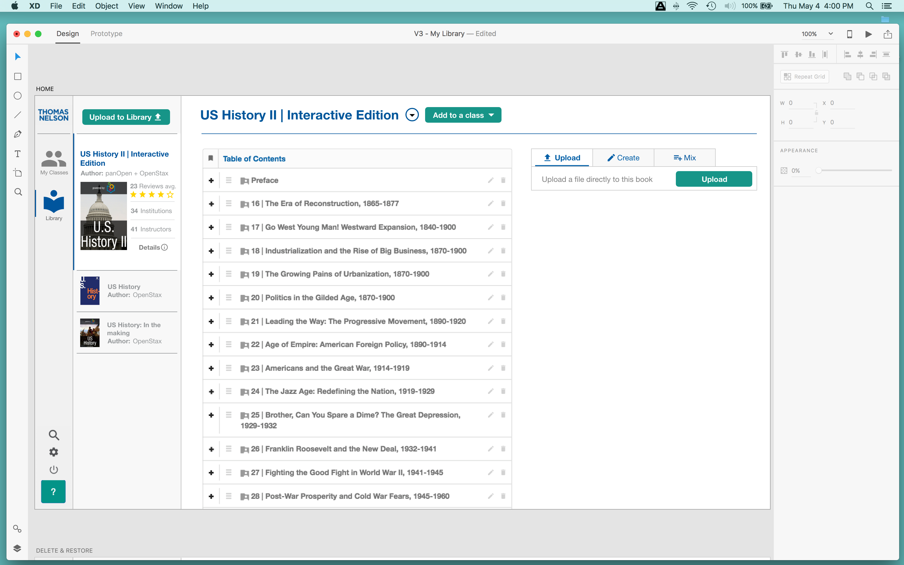

Product-designer and front-end web developer From Bhutan, based in Brooklyn, 23.
panOpen is a platform for faculty and students in higher ed aimed at lowering the cost of education and mainstreaming OER's prevalence as an alternate to the commercial publisher textbooks with powerful OER customization and sharing technology.
One of the ways panOpen made OER a more powerful alternative is by empowering the faculty with tools to intergrate interactive methods of learning right into the digital textbook. As such we had developed a heavy suite of tools for assessment creation!
We encountered this project as a result of faculty directly requesting a feature enabling them to set due and release dates for items in the course OER content (e-book). One of the major reasons for this was that they wanted to be the amount of content students were able to digest. The due dates was to make sure they could maintain that students were advancing at the same pace with the rest of their class.
My first encounter with this project came during the "Research" part of the process flow. I sat in on a call with our in house product designer, a user and our customer service team to discuss the "due dates and release dates" story that had now landed on my lap. We established what the goal of the feature was to be and some hints as to what the faculty were accostumed to in their experience.
I really got to sink my teeth into the project while putting together the mockup. I quickly reconstructed the page in question in Adobe XD. Guided by a screenshot frankenstein wireframe that my teammate I designed the most lightweight solution possible.
Through my development experience in the application, I knew there were a few places i could really cut deep and keep the story a lean operation. I utuilized plugins i knew we had intergrated for calendars. And with my knowledge of bootstrap, grided my designs into the columns necessary for a responsive and most importantly non-deconstructive implementation process. After another round of internal review, we had something ready for testing.
I worked my fellow product designer to orchestrate usability tests with the faculty who had requested the feature. With the feedback we got I put some finishing touches on the mockups and the designs hopped into our next sprint in the form of a production feature build. I worked with the developers involved with building how i wanted the plugins implemented as well as the logic in functionality for the due dates and release dates not only for the faculty users, but also the students.
The first round of formal testing came swiftly because in tandem with building out the story, we had built the groundwork for feature flagging. We engaged and flagged the faculty involved with bringing the request forward for a first hand look and a formal initial round of user testing and interviewing.
As easy as it can be to feel done with a story, theres nothing like a user review to keep your head out of the clouds. There was a painfully clear issue with the efficincey of the UI that occured almost immediatley as the faculty dug into the new tools. Our theory that faculty would want a tool to mark and set multiple dates at the same time turned out to be just so, a lot of our testers had lost track of where the set date button was.
To combat the issue I collaborated with our lead designer once again. After the call we had already both come up with solutions to bring to the table. The ultimate goal of our final iteration would be to solve the problem of faculty "losing" their set date buttons. With an overflowing scrollable element
on the page our UI problem was clear. Our solution was to make the controls "sticky" fixing to the top of the window. This would enable our faculty never lost track of their controls after scrolling beyond their initial position on the page.
This high resolution gif demonstrates the iteration that we decided on. By sticking the menu to the roof of the window, we solved the problem of our users lossing track of where their control is. Other use cases involve selcting items that spanned a larger height than the window could permit.
panOpen is a platform for faculty and students in higher ed aimed at lowering the cost of education and mainstreaming OER's prevalence as an alternate to the commercial publisher textbooks with powerful OER customization and sharing technology.
Through running usability tests, myself and the senior designer at panOpen discovered major UX and UI inefficiencies that translated directly into a business problem. The problems in the experience and interface weighed heavily on the lack of intuitiveness. This in turn disabled an independent signup process for users.
UX & UI
Keeping in mind that this product is built for faculty in higher ed, the usability tests revealed that creating courses and assigning content to the courses was tough to figure out. Specifically that there were too many steps and consequent navigations involved in the process that lead the user to loose track of context and making their initial contact with the app a tough learning curve.
The UI failure was largely in the screen real-estate. Watching the users search for their success showed that some components in the UI were real dead-zones in the 1366x768 grid, wasted space. This was important to us because our panOpen application hosted a huge suite of features which had to be tucked away in the UI because of the immense amount of data that we were rendering to the GUI real estate.
Business Case
Without a 5 minute account creation and primary goal success, our business took a direct hit. The lack of intuitiveness resulted in the customer success team having to on board faculty 1 on 1. This process had become a bottleneck in our scaling as well as efficiency of sales. The EdTech industry is primarily b2b, we target the faculty and try to on board them, but we wanted to try and adopt the organic signup, moving into the direction of a handsfree user account creation and seamless integration with their classes. This would change the game of how we were adopted and open the doors wide to all faculty and hence growing the OER community in higher Ed.
Mockup Draft #1
This was one of the projects that I was fortunate enough to be involved in all the moving parts of. I spearheaded the UX and UI redesign project on Adobe Experience Design and fleshed out the new concept with a few major themes in mind:
Here is a sample of original
And a sample of the update. Man those buttons really do POP!
Team Collaboration
I paired up with our senior designer to revise and lean-ify the updates I had drawn up. The outcome was a few experiences and flow updates as well as removing a extra bells and whistles that didn't have any or enough measurable impact on user sucess. #leanAF
The whole product team huddled and decided on a way to slot it into our product road map and how to delegate the work. I huddled with QA for a bit to create acceptance criteria and formulate stories with the clearest language we could.
During the life of its implementation I touched base with developers overseeing the construction and ensuring sure all interactions were translating from design to code correctly. This ranged from me turning around and taking a look over the shoulder to sometimes talking design and quickly updating stories together to solve communication errors.